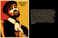

File:Bigprooffull.jpg
From The Giant: The Definitive Obey Giant Site
{kind=link}
Shepard recently collaborated with Shady Records on this memorial print for Hip Hop Artist Proof, of D-12 fame, who was tragically killed in Detroit. The net profits of the print will be donated towards the "Big Proof Forever Foundation", to help secure a wonderful future for his family.
The legacy of Deshaun “Proof” Holton will be forever remembered by all the lives that he has touched. His passion and conviction to enrich other people’s lives was his muse. The method he chose to deliver his will was through his love of hip-hop. Pioneer of Detroit Hip-Hop, he was the glue that pieced together a whole city of artists and brought them to the eyes and ears of the world.
His career accomplishments are endless. From his work with in D-12, Shady Records, and with Eminem, to working as a blossoming solo artist his voice was heard across the globe. His success enabled him to continue to build on to an already firm base. The birth of his label Iron Fist was the next step in bringing his idea of hip-hop to the masses.
Through all the changes and growth in his life he never lost who he was, never forgot where he came from, and never quit giving back to those who needed. In all he will not only be remembered as an artist but as a proud son, a loving father, a caring husband, a devoted friend, and a beautiful person.
Let us all keep his name alive for eternity through following the examples he gave us for he is truly a great man.
Big Proof Forever P05072 $45 Edition of 1500, all signed by Shepard
File history
Click on a date/time to view the file as it appeared at that time.
| Date/Time | Thumbnail | Dimensions | User | Comment | |
|---|---|---|---|---|---|
| current | 18:34, 14 June 2006 |  | 800 × 533 (119 KB) | Noverflow (Talk | contribs) | Shepard recently collaborated with Shady Records on this memorial print for Hip Hop Artist Proof, of D-12 fame, who was tragically killed in Detroit. The net profits of the print will be donated towards the "Big Proof Forever Foundation", to help secure a |
- Edit this file using an external application (See the setup instructions for more information)
{kind=link}
File usage
The following page links to this file: